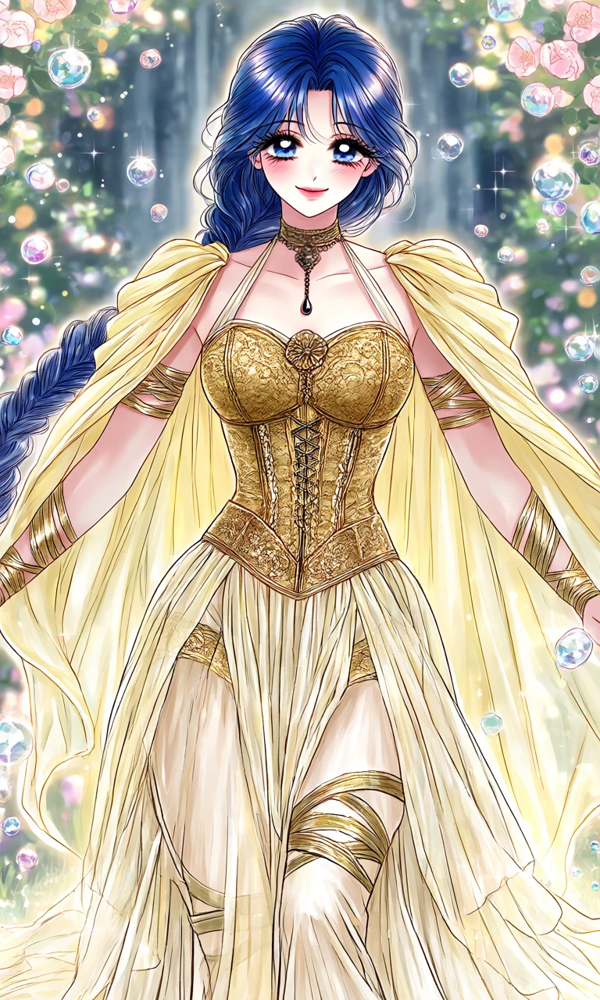
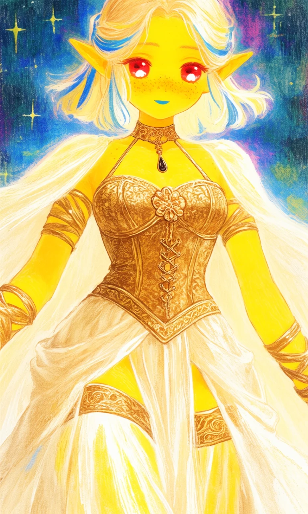

Ivory Oracle

Outfit Prompt
Outfit:
Upper Body & Torso
Neckline: A halter-style top with thin straps that connect to a decorative choker/neckpiece. A long pendant necklace with a dark teardrop-shaped gem hangs centrally.
Bustier/Corset: A structured, ornate golden bodice with intricate brocade or embroidered patterns. It has a sweetheart shape with a central decorative knot or rosette. Below the bust, it transitions into a laced or chained detail that creates a corset-like effect, cinching the waist dramatically.
Sleeves/Cape: Dramatic, voluminous flowing cape-sleeves in pale yellow that drape from the shoulders all the way down. These are wide and elegant, giving a majestic, angelic feel when the arms move.
Arm Details: Multiple golden armbands and wrapped accents on the upper arms and forearms, adding a tribal or ancient-civilization touch.
Waist & Midsection
A wide, ornate golden sash/belt sits at the natural waist, featuring detailed embroidery or patterns matching the bodice. This accentuates the hourglass figure and serves as a strong visual focal point.
Lower Body & Skirt
Skirt: A long, multi-layered, flowing gown that pools at the feet. The fabric appears soft and drapey (possibly silk or chiffon), with beautiful folds and movement.
Design Details: Sheer or lighter panels are visible underneath, creating depth. There are decorative golden bands or wrapped accents on the upper thighs area that peek through the skirt layers, echoing the arm details for cohesion.
The skirt has a slight train, adding grandeur.
Outfit Examples



